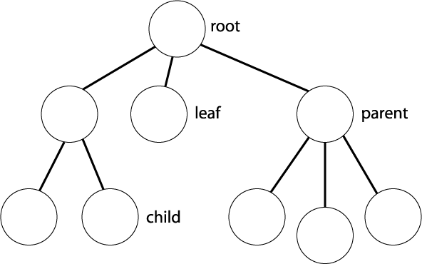

Aprendiendo Godot
Una engine basada en nodos
¿Quién soy?
Elena Guzmán Blanco, entre otras cosas:
- Android y C# developer
- Escritora y worldbuilder
- Directora de juegos de rol
- Bloguera
- Fan de TODO pero sin tiempo para nada
¿Qué es un videojuego?
Historias, ocio, creatividad
Una nueva frontera hacia la creación, expresión. Historias dinámicas con interacción directa con jugador@s.
La ¿última? conquista de la democratización de las herramientas.
Tareas en el gamedev
- Gráficos
- Música y sonido
- Diseño de niveles y jugabilidad
- Lógica y programación
- Traducción
- Guión e historias
- Marketing y ventas
Nuestra misión como programmers
Implementar mecánicas, crear obstáculos, crear inteligencia artificial, simular físicas... a través de código u otras herramientas.
Nuestra herramienta: Godot Engine
¿Por qué Godot?
- Open-source
- Gratuita
- Multiplataforma
- Con motor 2D y 3D
- Una comunidad creciente
- Lenguaje propio basado en Python, GDscript
- Curva de aprendizaje adecuada
- Resultados en poco tiempo
Nodos
¿Qué es un nodo?
Un nodo es la unidad básica con la que se opera en Godot. Una escena, un objeto con colisiones, el mundo para los niveles de nuestro juego, un sprite...
Existen nodos de diferentes tipos, como los que hemos menciondo anteriormente como ejemplos, y que cuentan con diferentes características. Posición, transparencia, colores... que pueden ser modificables. Algunas de estas características o propiedades son relativas al nodo desde el cual cuelga el nodo en cuestión.
Los nodos tienen nombre, tienen sus características, sirven para muchos propósitos
A través de esta estructura de ramas (o raíces, ya que los nodos cuelgan hacia abajo desde el nodo principal o top).
Scripting

Variables
Almacén de valores para referencias posteriores
var nombrePersonaje = "Nombre aleatorio"Condicionales
if num < 2:
print ("Es menor que dos")
elif num > 2 and num < 5:
print ("Número entre dos y cinco")
else:
print ("Número mayor que cinco")
Bloque switch o match
Evaluar una variable entre posibles valores concretos:
match direccion:
1:
print ("Número 1")
2:
print ("Número 2")
3:
print ("Número 3")
Listas de datos, arrays
var listaDatos = ["Godot", 34, 13.4, true, "otro dato", 3]Diccionarios, hashes
var datosPersonaje = { "nombre" : "Abraxas", "salud" : 20 }Bucle WHILE
while (true):
print("¡Bucle infinito!")
Bucle FOREACH
for item in listaDatos:
print(item)
Bucle FOR
for i in range(1, 10):
print i
Empezando en 4, hacia 20, con saltos de a dos
for i in range(4, 20, 2):
print i
Declarando nuestras propias funciones, con parámetros y devolviendo valor...
func sumando(num1, num2):
return num1 + num2
... O no devuelven valores y no reciben parámetros:
func msgAConsola():
print "Enviando mensaje..."
pass
El poder del tabulador
Cada fragmento de código mostrado está indentado.
La herencia de Python es innegable.
Más conceptos útiles
Señales
Eventos predefinidos en la engine y cuya reacción podemos personalizar
Ejemplo: Si encuentro una moneda, la recojo y esta desaparece
Grupos
Etiquetas para nodos que nos permiten diferenciar entre todos los objetos, para reaccionr con ellos mediante código.
Nodos conectados
Nodos, estructurad de raíz o árbol. Todo está conectado, para comunicar cambios o realizar acciones sobre otros.
¿Dudas?

|
¿Y ahora qué?
Una base para RPG 2D
- Personaje protagonista
- Sprites sencillos
- Movimiento de personje
- Pick ups o coleccionables
- Recarga de escena